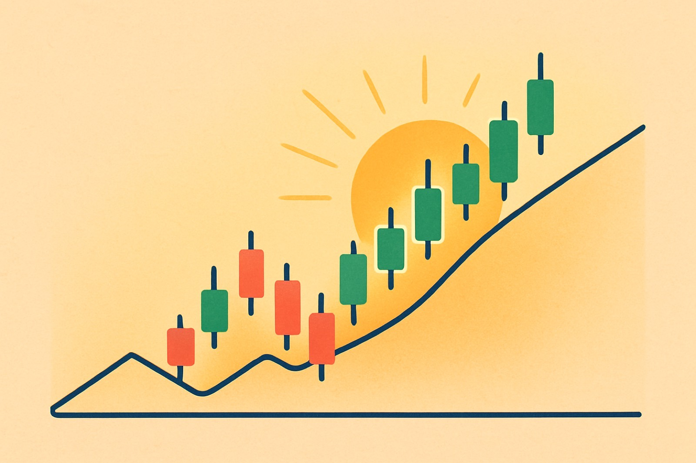
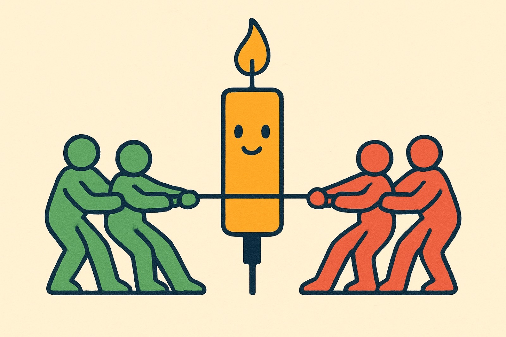
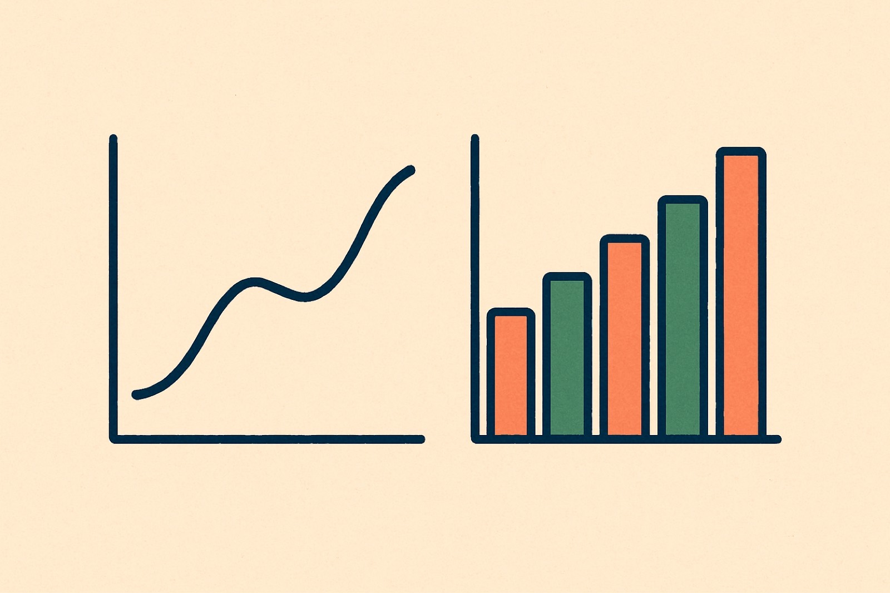

One candlestick tells a whole story. In a single shape it captures a period's battle between buyers and sellers, and where price finally settled. Learn to read one candle and a chart stops looking like noise.

A candlestick shows one period's price action. The body spans the open and the close. The wicks, or shadows, reach up to the high and down to the low.
One candle packs four prices into a single shape: open, high, low, and close.


Why candles over a plain line? More information per period.
The body's color says who finished in control. Its length says how hard they pushed.
Buyers won the period. Price finished higher than it started, so demand carried it.
Sellers took over. Price finished lower than it started, so supply pressed it down.
Body length measures pressure.
The same stock looks different on a weekly, daily, or hourly chart. Each is the same picture seen from a different distance.
Zoom out for the trend. Zoom in for the detail.
Read more than one on purpose.
Drag the two sliders. When the close finishes above the open the body turns green. Drop it below and the body turns red. Line them up for a doji.
Tap a card to pick it up, then tap the column where it belongs. Ask one question each time: did buyers or sellers finish in control?
Five questions. Answer them to earn your points for the lesson.
The body runs from open to close; the wicks reach the high and low.
Green means buyers won the period; red means sellers did.
A longer body means a stronger, more one-sided push.
The same stock reads differently across timeframes, so confirm on more than one.